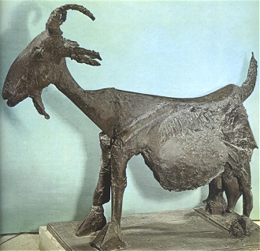

Obsah
Kubismus
Futurismus
Dadaismus
Surrealismus
Proletáøská poezie
Poetismus
Èeskı surrealismus
Imagismus a akméismus
Expresionismus
Avantgardní divadlo
Skupina 42
+ Jaroslav Seifert
+ Vítìzslav Nezval
+ Vladislav Vanèura
+ Jiøí Koláø
+ Josef Kainar

Ernst: Kozoroec
Avantgardní manifesty
|
AVANTGARDA
Avantgarda (franc. pøedvoj) proívala svùj zlatı vìk v první tøetinì 20. století. Avantgardní umìlci kladli velkı dùraz na formu a nové tvùrèí postupy. Neuznávali tradièní estetické, morální ani jiné hodnoty a chtìli vybudovat novı øád. Nové smìry vìtšinou ovlivnily více druhù umìní zároveò. Kubismus se projevil v malíøství i architektuøe, futurismus, dadaismus, expresionismus a surrealismus v literatuøe i vıtvarném umìní. Tyto smìry se velmi rychle rozšíøily do celého svìta. Ostatní ismy byly více spjaty s konkrétní zemí a omezily se pouze literaturu, napøíklad ruskı akméismus a imainismus, angloamerickı imagismus nebo proletáøské umìní a poetismus v Èeskoslovensku. Avantgardních smìrù bylo velké mnoství a tìko se hledají rysy, které by byly spoleèné všem. Umìlci rádi spolupracovali napøíè rùznımi oblastmi i státy, vytváøeli uzavøené skupiny a psali manifesty. Spoleèná je také jejich radikálnost a revoluènost. Tvùrci oslavovali vıdobytky moderní vìdy i techniky a snili o lepším a spravedlivìjším svìtì. Øada spisovatelù a malíøù prošla hned nìkolika avantgardními smìry.
Nìkteøí odborníci dìlí avantgardu na dva hlavní proudy. Kubismus, konstruktivismus, futurismus nebo abstraktní umìní se soustøeïují na racionální analızu a objektivní pøístup ke svìtu. Expresionismus, dada, surrealismus nebo poetismus jsou smìry subjektivnìjší a upøednostòují tvoøivost a proitek.
Nejvıznamnìjším avantgardním spisovatelem byl Francouz Guillaume Apollinaire.
Avantgardní manifesty
Avantgardní umìlci si velmi oblíbili ánr manifestu. Zatímco moderní umìlecké smìry si vìtšinou vystaèily s jedním programovım prohlášením, avantgardisté psali jeden manifest za druhım. Zveøejòovali v nich své názory a postoje, demonstrovali politickou orientaci, popisovali konkrétní tvùrèí postupy, bránili novı smìr proti jeho odpùrcùm nebo vysvìtlovali své vıtvory. Díky tomu se u nemuseli v umìleckıch dílech tìmto problémùm vìnovat.
|
Historie
První polovina 20. století byla ve znamení mnoha historickıch zvratù. V evropskıch zemích se posiluje demokracie. Postupnì se zavádí všeobecné a rovné hlasovací právo. Pozdìji mohou volit i eny a vzrùstá vliv demokratickıch institucí. Tento vıvoj pøervala 1. svìtová válka (1914-1918). Další ranou pro demokracii byl bolševickı pøevrat v Rusku (1917), Leninùv program váleèného komunismu a Stalinùv kult osobnosti. V mnohıch evropskıch státech se dostali k moci nacionalisté (Itálie, Španìlsko...). Vítìzství Hitlera a nacistù v Nìmecku (1933) vedlo k rozpoutání 2. svìtové války (1939-1945).
Chirico: Guillaume Apollinaire
|
Kolektivismus
Kolektivním chováním a masovou psychologií se zabıvali filozofové i vìdci. Rakouskı psychoanalytik Sigmund Freud zkoumal kolektivní duši. Francouzskı antropolog Gustave Le Bon píše pojednání Duše davu a Zákony psychologického vıvoje národù. Španìlskı filozof José Ortega y Gaset napsal esej Vzpoura davù. Rakouskı spisovatel Elias Canetti publikoval mnohem pozdìji na podobné téma knihu Masa a moc.
|
Avantgardní skupiny
Zatímco moderní umìlci byli vìtšinou zapøisáhlí individualisté, avantgardní tvùrci se naopak rádi sdruovali v rùznıch skupinách a svazech. Ty navíc spolupracovaly napøíè rùznımi státy a vydávaly spoleèné mezinárodní èasopisy. Avantgardní umìlci se také více obèansky angaovali a vstupovali do radikálních politickıch stran. Avantgardní skupiny mìly své programové teoretiky, kteøí se vìnovali psaní manifestù a propagaci jednotlivıch hnutí. Èasto se v nich scházeli umìlci z rùznıch oborù – malíøi, spisovatelé, sochaøi, reiséøi, herci atd. Surrealistické skupiny existují dodnes, ostatní uskupení mìla kratší trvání. Jenom v Èechách vznikají sdruení Osma, Skupina vıtvarnıch umìlcù, Devìtsil, Literární skupina, Skupina surrealistù v ÈSR nebo Skupina 42. Umìlci také vytváøeli kolektivní díla, buï ve dvojici nebo celé skupinì.
|
|
Komunismus a nacismus

Soudruh Lenin uklízí zemìkouli
|
Avantgarda a totalitní reimy
Avantgardní umìlci objevili øadu novıch tvùrèích postupù a pøišli s pøevratnımi myšlenkami. Podobnı radikální obrat hlásali i zakladatelé novodobıch totalitních ideologií Lenin a Hitler. Vìtšina avantgardních umìlcù odmítala demokratické zøízení a podporovala komunismus nebo nacismus. Zvláš, kdy se jejich zakladatelé dostali k moci. Ruští futuristé, èlenové Devìtsilu a surrealisté tíhli k bolševismu, ale kdy zaèal Stalin likvidovat bıvalé soudruhy, mnozí z nich prohlédli a pøipojili se k jeho kritikùm. Italské futuristy zase oslovil fašismus a Mussolini. Nacismus zaujal nìmecké expresionisty a angloamerické imagisty. Tyto ideologie zprvu vyuívaly podporu avantgardních umìlcù, ale jakmile si upevnily mocenské pozice, zaèaly nové umìní pronásledovat. V Nìmecku byly moderní i avantgardní smìry prohlášeny za zvrhlé umìní. Øada umìlcù radìji emigrovala do zahranièí, jiní skonèili v koncentraèních táborech, nebo byli popraveni. V Sovìtském svazu byli umìlci pronásledováni pro zrùdnı formalismus. Konèili ve vìzeních, pracovních táborech, na popravištích nebo nevyjasnìnımi sebevradami.
|

Chaplin paroduje Hitlera ve svém filmu Diktátor
|
Vıtvarné umìní

Le Corbusier:
Notre Dame du Haut
Lisickij, Stam: ehlièky mrakù
|
Avantgardní architektura
Na zaèátku 20. století se prosadil jako hlavní stavební materiál beton. Pevné ocelové konstrukce umonily avantgardním architektùm realizovat velmi odváné projekty. Mìstem jako organickım celkem se zaèala zabıvat urbanistika. Zajímavá byla myšlenka kolektivních domù a koncepce bytu jako „stroje na bydlení“. Avantgardisté odmítali secesní ozdùbky a neúèelové prvky. Pravou krásu spatøovali v konstrukci a funkènosti.
Nejvıznamnìjším avantgardním architektem byl Francouz Le Corbusier [korbisje], zakladatel purismu a funkcionalismu, kterı zdùrazòoval pøísnou funkènost staveb i bìnıch pøedmìtù. V Rusku se pøihlásil o slovo konstruktivismus (Lisickij, Tatlin...), kterı odmítl zakrıvat konstrukci stavby fasádou a stavìl na odiv technickou stránku budov. Tento smìr ovlivnil také vıtvarné umìní, scénografii nebo kniní kulturu. V Nìmecku vznikla avantgardní vıtvarná škola Bauhaus, ze které vzešlo mnoho uitıch pøedmìtù s pøísnì úèelovım designem. Èeskoslovensko dalo svìtu kubistickou architekturu (Goèárùv dùm U Èerné Matky Boí v Praze), vznikaly zde i stavby funkcionalistické (Veletrní palác O.Tyla a J.Fuchse v Praze).
|
Tatlinova vì Tøetí internacionály nebyla realizována, stejnì jako mrakodrapy „ehlièky“ mrakù a mnohé další konstruktivistické projekty.
|

Munch: Veèer na Karl Johan

Schwiters: Kots
|
Avantgardní malíøství
Nejvıznamnìjším avantgardním malíøem byl zakladatel kubismu Španìl Pablo Picasso. Tento umìlec je povaován za objevitele techniky koláe a asambláe.
Kolá vzniká spojením papírovıch vıstøikù z novin nebo èasopisù a jejich nalepením na plochu. Hojnì ji vyuívali dadaisté a surrealisté. Asamblá je na rozdíl od koláe trojrozmìrná a tvoøí ji rùzné pøedmìty nebo jejich èásti. Dadaisté vyuívali pøi tvorbì náhodu. Surrealisté pøišli s technikou automatické kresby. Španìlskı malíø Salvador Dalí prosazoval tzv. paranoicko-kritickou metodu.
Picasso: Ateliér se sádrovou hlavou
|

Dalí: Kanibalismus podzimu

Miró: Pùlnoèní zpìv slavíka a ranní déš
|

Brancusi: Køídlo ptáka
Rekonstrukce Pešánkova spektrofonu
|
Avantgardní sochaøství
Avantgardní sochaøi zaèali vytváøet nefigurativní plastiky. Dadaistické ready-mades byly obyèejné pøedmìty denní potøeby poouchle vydávané za umìní a vystavované v galeriích. Surrealisté vytváøeli podivné objekty sestavené z nejrùznìjších pøedmìtù. Klasické sochy, které by realisticky zobrazovaly postavy, avantgardní umìlci neuznávali. Nejvıznamnìjšími sochaøi byli Rumun Konstantin Brancusi [brankuš] nebo Švıcar Alberto Giacometti [dakometi]. Skulptury tvoøil také Picasso, Duchamp, Ernst, Miró nebo Dalí. Nejoriginálnìjším èeskım sochaøem byl autor kinetickıch svítících plastik Zdenìk Pešánek, kterı doplnil klavír o zvláštní svítící zaøízení, tzv. spektrofon.

Picassova Koza je vlastnì asamblá. Bøicho tvoøí proutìnı košík, rohy vinnı keø a zadek osvìtlovací tìleso.
|

Duchamp: Stojan na sušení láhví
Giacometti: Stùl
|
Hudba
Jaroslav Jeek diriguje orchestr Osvobozeného divadla
|
Avantgardní hudba
Avantgardní skladatelé si libovali v kakofonii a disharmoniích. Nìkdy se soustøedili na grafickou podobu partitury a vùbec se nezabıvali tím, zda ji lze zahrát. Èeskı umìlec profesor Alois Hába skládal tzv. ètvrttónovou hudbu. Tu lze zahrát pouze na speciální klavír, kterı má kromì bílıch a èernıch kláves ještì další. Jeho stupnice toti zahrnovala kromì tónù a pùltónù ještì ètvrttóny. Nejvıznamnìjším meziváleènım skladatelem byl Rakušan Arnold Schönberg, tvùrce dodekafonie. Nìkteøí avantgardní umìlci si oblíbili americkı jazz, napøíklad Èech Jaroslav Jeek. Divadelní reiséøi jako Brecht, Honzl nebo E.F.Burian vyuívali písnì v avantgardních inscenacích.
|

Schönbergùv autoportrét
|
Avantgardní film

Wiene: Kabinet doktora Caligariho
|
Avantgardní kinematografie a fotografie
Film byl stejnì jako fotografie zprvu pouhım technickım vıstøelkem a pouovou atrakcí. Záhy se ale z jeho sledování stala oblíbená zábava a ve všech vìtších mìstech vznikla stálá kina. Nové filmové spoleènosti do nich dodávaly hlavnì grotesky a nepøíliš kvalitní komerèní snímky. Umìní udìlali z filmu a avantgardní reiséøi, kteøí experimentovali se svìtlem, støihem a filmovımi triky. Vtiskli mu také novı estetickı obsah. Filmovou obdobu mìl expresionismus (Wiene, Lang, Murnau), surrealismus (Buñuel, Dalí) i poetismus (Nezval, Machatı). Vıznamnım avantgardním fotografem byl Man Ray. Velmi oblíbené byly fotografické koláe (Teige).
|
Avantgardní fotografie

Man Ray: Bez názvu
|
Internetové stránky
Avantgarda
Kubismus
Futurismus
Bauhaus
Bauhaus
Bauhaus
Expresionismus
Surrealismus
Koláe
Le Corbusier
Le Corbusier
Le Corbusier
Brancusi, sochaø
Brancusi, sochaø
Giacometti, sochaø
Schönberg, hudební skladatel
Pešánek, vıtvarník
Nazi & Soviet Art
Le Bon: Psychologie davu
Exkurze
Veletrní palác, Národní galerie v Praze
Èeské muzeum vıtvarnıch umìní, Praha
|
Doporuèená èetba
Avantgarda známá a neznámá, Generaèní diskuse (3 svazky), Svoboda
Èapek, Karel: Francouzská poezie a jiné pøeklady, SNKLHU, Praha 1957
Dìjiny èeského vıtvarného umìní, 1890-1938, IV, Academia, Praha 1998
Hlaváè, ¼udovít: Dejiny fotografie, Osveta, Praha 1987
Hoffmeister, Adolf: Èas se nevrací, Èeskoslovenskı spisovatel, Praha 1965
Hoffmeister, A.: Podoby a pøedobrazy, Èeskoslovenskı spisovatel, Praha 1988
Hrubı, Petr: Osudné iluze, Èeští spisovatelé a komunismus 1917-1987
Lamaè, Miroslav: Osma a Skupina vıtvarnıch umìlcù (1907-1917), Odeon, Praha 1988
Micheli, M. de: Umìlecké avantgardy dvacátého století, Praha 1964
Mrázková, Daniela: Pøíbìh fotografie, Mladá fronta, Praha 1985
Nezval, Vítìzslav: Moderní básnické smìry, Èeskoslovenskı spisovatel, Praha 1989
Ortega y Gasset, José: Vzpoura davù, pøel. V.Èernı, Naše vojsko, Praha 1993
Osma a Skupina vıtvarnıch umìlcù, Teorie, kritika, polemika, Odeon, Praha 1992
Pijoan, José: Dìjiny umìní, 9. a 10. díl
Umìní pro všechny smysly, Meziváleèná avantgarda v Èeskoslovensku, Praha 1993 (katalog k vıstavì)
Velké trojhvìzdí, Praha 1987 (Apollinaire, Éluard, Prévert)
|
Vypracuj písemnı referát o nìkteré z uvedenıch knih.
Miróùv Holandskı interiér je avantgardní „kopií“ klasického obrazu H.M.Sorgha Hráè na loutnu. Porovnej obì díla.
|
|